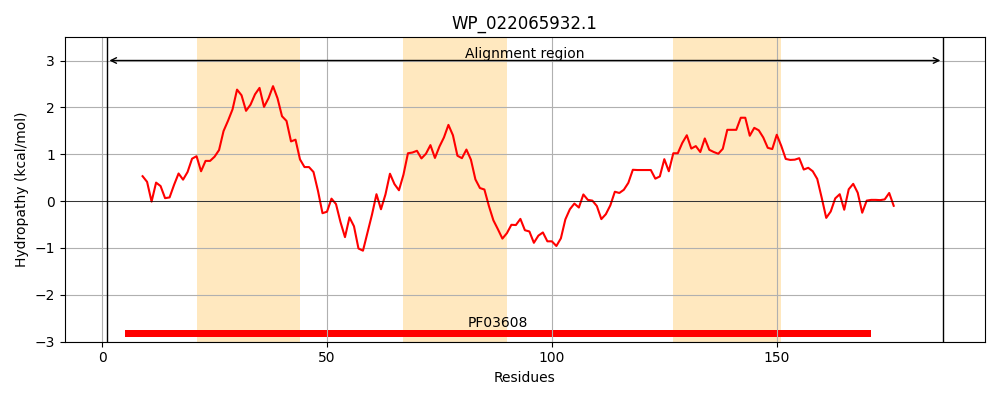
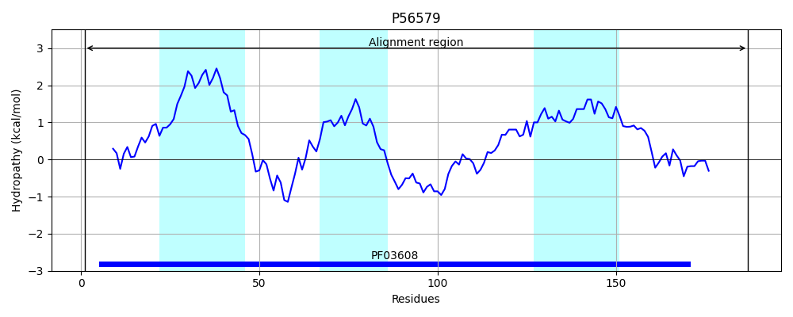
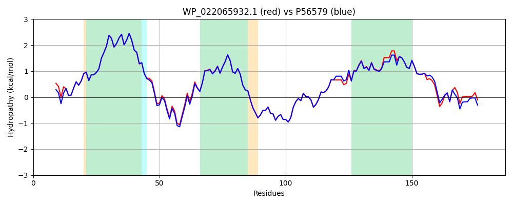

Hit Accession: P56579
Hit TCID: 4.A.4.1.1
Hit Description: gnl|BL_ORD_ID|11013 gnl|TC-DB|P56579|4.A.4.1.1 PTS SYSTEM, GLUCITOL/SORBITOL-SPECIFIC IIC2 COMPONENT (EIIC2-GUT) (GLUCITOL/SORBITOL-PERMEASE IIC2 COMPONENT) (PHOSPHOTRANSFERASE ENZYME II, C2 COMPONENT) - Escherichia coli.
Mach Len: 187
e:0.000000
Query TMS Count : 3
Hit TMS Count: 3
TMS-Overlap Score: 3.400000
Predicted Substrates:CHEBI:30911;glucitol
BLAST Alignment:
Score: 922 , Bit scores: 359 bits, E-value: 4.5e-129, Alignment length: 187, Percentage identity: 93
Query: 1 MIDVVTHGAEWFIGLFQKGGEVFTGMVTGILPLLISLLVIMNALINFIGQQRIEKLAQRCAGNPISRYLLLPCIGTFVFCNPMTLSLGRFMPEKYKPSYYAAASYSCHSMNGLFPHINPGELFVYLGIANGLTTLGLPLGPLAVSYLLVGLVTNFFRGWVTDLTTSIFEKKMAIQLARKVHLSGATS 187
MI+ +THGAEWFIGLFQKGGEVFTGMVTGILPLLISLLVIMNALINFIGQ RIE+ AQRCAGNP+SRYLLLPCIGTFVFCNPMTLSLGRFMPEKYKPSYYAAASYSCHSMNGLFPHINPGELFVYLGIA+GLTTL LPLGPLAVSYLLVGLVTNFFRGWVTDLTT+IFEKKM IQL +KVHL+GATS
Sbjct: 1 MIETITHGAEWFIGLFQKGGEVFTGMVTGILPLLISLLVIMNALINFIGQHRIERFAQRCAGNPVSRYLLLPCIGTFVFCNPMTLSLGRFMPEKYKPSYYAAASYSCHSMNGLFPHINPGELFVYLGIASGLTTLNLPLGPLAVSYLLVGLVTNFFRGWVTDLTTAIFEKKMGIQLEQKVHLAGATS 187 | Protein Hydropathy Plots: |
|---|
|  |  |
Pairwise Alignment-Hydropathy Plot:
|
|---|
|  |